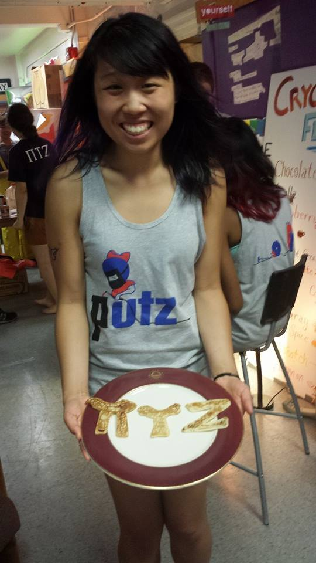

Currently, I'm a sophomore at the Massachusetts Institute of Technology living on Putz , where the Wall Street Journal made this video Tech Diary: 'Tech Dorm Gone Wild'
At MIT, I'm involved in my sorority, Kappa Alpha Theta , Asian Dance Team , Association of Taiwanese Students , a committee member on UA Events Committee, a member of Undergraduate Student Advisory Group in EECS (USAGE), and a mentor for high school females through Society of Women Engineers Women in Science and Engineering (WiSE) and College Connections programs
While in high school, my life revolved around robotics. I competed in VEX Robotics Competition, FIRST Robotics Competition, FIRST Tech Challenge and Zero Robotics.
I am a VA/DC Affiliate Winner(2013) and National Runner-Up (2013, 2012) for the National Center for Women in Information Technology Aspirations in Computing Award